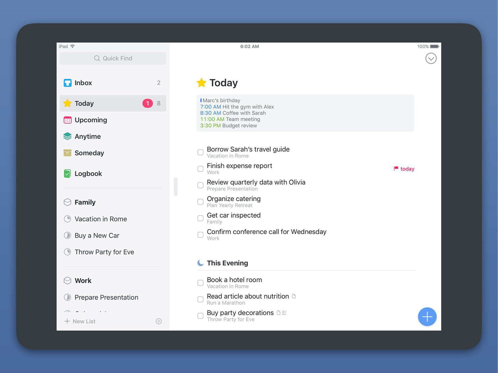

I’ve bounced back and forth between OmniFocus and Things several times now. They are very similar applications in many ways, but do have some significant differences.

Here’s what I like and dislike about each:
OmniFocus
Pros:
- End to end encryption.
- Extremely flexible.
- Web interface.
Cons:
- The visual design of the app isn’t to my taste. This seems silly, but I find myself less willing to use an app I don’t like the look of.
- Keyboard shortcuts on the Mac are not intuitive to me.
- Extra complexity of defer + due dates for every task is an annoyance. The Things model of “plan for later” dates, with optional deadlines and additional reminders, works better with the way I work.
- The downside of having an extremely flexible application is that it is necessary more complex. I do find OmniFocus’s flexibility helpful, but I’m left with just a bit more unhelpful (for me) complexity than I’d like.
- Uses the clunky, default iOS date picker with no option for natural language parsing of dates/times.
- The natural language date parsing on the Mac is a bit finicky. For example,
sep 1works butsept 1does not for “September 1”. - Adding a new task on the watch with “hey Siri” requires tapping the watch after you finish dictating.
Things
Pros:
- One of the best-looking apps of all time (not hyperbole, it’s really good).
- User interface design and user experience is extremely well-conceived and we’ll-executed.
- iPad keyboard support (arguably the best of any app of any category – again, not hyperbole).
- Excellent natural language parsing for dates on the Mac, and a great custom date picker on iOS.
- Headings inside projects.
- The “today” and “this evening” lists map onto how my brain works.
Cons:
- Can’t check off a repeating task before its due date (they are working on fixing this but it requires a revamp of their underlying data models so I don’t expect this to change anytime soon).
- No ability to attach files to tasks.
- No ability to use rich text in task notes.
Both are good at
- Reliable, fast sync.
- Very few, if any, crashes or bugs.
- Made by reputable indie developers who have been around for a long time.
- Quick task entry pop-up on the Mac, and draggable new task button on iOS (allows you to drop a new task exactly where you want it).
- Integration with the system share sheet on iOS.
Both are missing
- Any notion of shared task lists.